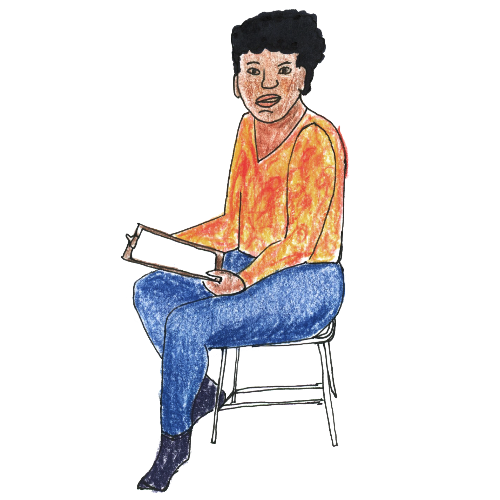

Changing the World With Pocket Change: One Leader Shares Her Story
Hello! Interested in helping women and girls? Passionate about feminist social change? Want to increase your contribution to anti-racist work or projects focused on racial & gender equity? If the answer is yes, then we should talk! I want to tell you about the work of organizations by and for women & girls of color and share some new data about how this work is funded.
I’m Regina and I live in Louisiana. I am a fictional character representing almost 1000 leaders who participated in a study published by the Ms. Foundation for Women. Pocket Change: How Women and Girls of Color Do More With Less sets a benchmark for how the social change work of women and girls of color is currently funded. The findings tell us we can do better.
The big picture learning from Pocket Change is how few dollars are invested in women and girls of color.

Out of approximately $67 billion spent annually by foundations on grantmaking, only $356 million (half of 1%) goes to women and girls of color. That is $5.48 per person each year.

How do we make such a small amount of money stretch, you ask? I will tell you my story. Keep in mind this is a compilation of the experiences of many others. So here’s a side note about who we “women and girls of color” actually are...
Most of the Pocket Change research particpants identify as women, girls, or gender nonbinary people and as Black, Latinx, Asian, Indigenous, Muslim, or some other group typically described as “people of color.” Like many of us, I typically choose to describe myself more specifically (in my case, as a cisgender Black woman) but I also identify as a “woman of color.” The term “women of color” was first coined by a Black woman as a term of solidarity. I love that, but I don't want it to be used as a euphemism that blends or erases our diversity and uniqueness.
It is important to me that when we say a nonprofit is “by and for” women and girls of color (or a “WGOC org”), we are looking at who makes the financial decisions for the organization.
Almost ¾ of the organizations interviewed for Pocket Change are “led” by WGOC. To meet criteria for the report, at least 75% of the leaders making financial decisions -- whether staff or board members -- are WGOC.
Organizations by and for WGOC are at work in every part of the United States, including Puerto Rico, Guam, the Northern Mariana Islands, and American Samoa.
I lead a youth nonprofit in Baton Rouge called Bloom. I founded Bloom in 2014 with three organizer colleagues soon after we returned home from protesting the police killing of 18 year-old Micheal Brown in Ferguson, Missouri. We were concerned about how police and state-sanctioned violence against girls and femme-identified youth was being overlooked at the time. In 2017, we gained 501(c)3 status and I became the executive director of Bloom. I started drawing a regular paycheck for the job in 2018.
My first grant was a $15,000 government grant that funded a summer youth outreach program in 2016. After that I secured a couple one-time grants of $5,000 to $10,000. Like almost every WGOC leader, I tried hard to get grants. But finding grant opportunities that sounded like they were actually intended for an organization like Bloom was a challenge. I feel like I wasted a lot of time.
Trend: Grants made to WGOC organizations are less than half the amount of the average grant size. The median size of grants made by foundations to WGOC organizations is $15,000 compared to $35,000, which was the median grant size for foundation grants reported to Candid in 2017. Small grants make it difficult to hire and pay staff sufficiently, so WGOC orgs report routinely losing excellent team members they have trained and grown to organizations that can pay more.
Trend: 53.4% of WGOC leaders report that grant opportunities do not include the populations or groups they work with. While donors and funders may be interested in funding women and girls of color, this intention is not publicly announced by most.